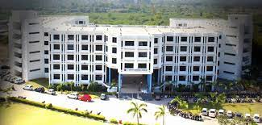
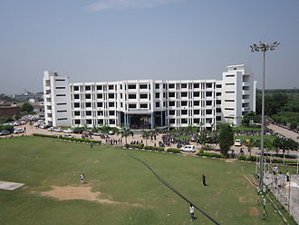
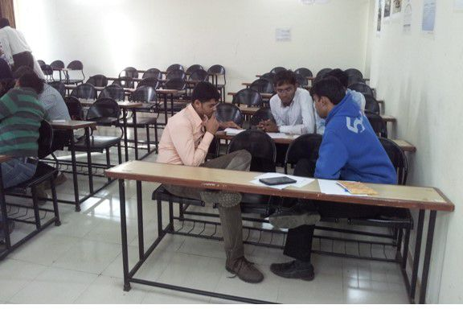
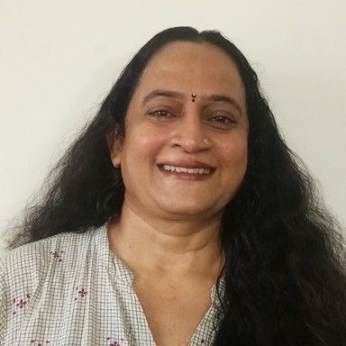
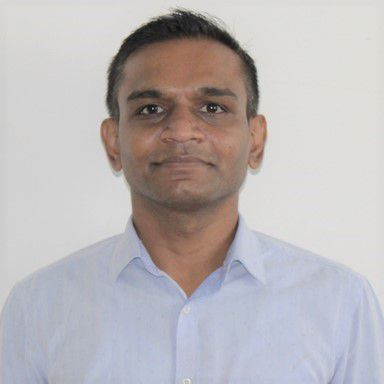

L.J. Institute of Engineering & Technology, commonly referred as LJIET, is a private technical institute located in sarkhej, Ahmedabad, Gujarat, India. Institute is approved by All India Council for Technical Education and is the part of L.J. Group of Institutes managed by Lok Jagruti Kendra (LJK) Trust. Mayur
|

|
|
|---|---|
| Type | Self-Finance College |
| Established | 2007 |
| Director | Dr. A.C. Suthar |
| Academic staff | 180 |
| Undergraduates | 2,500 (approx) |
| Postgraduates | 140 (approx) |
| Location | L.J. Campus, Ahmedabad, Gujarat, India 22°59′24″N 72°29′11″ECoordinates: 22°59′24″N 72° |
| Acronym | LJIET |
| Affiliations | Gujarat Technological University |
LJK runs 27 institutions on two well-developed environment-friendly campuses with dedicated buildings and infrastructure facilities, and offering various diploma, undergraduate and postgraduate programmes duly approved by respective apex bodies. LJ Institutes have over 18000 students and 700+ faculties engaged in teaching-learning, research and extension activities and striving to develop students into complete citizens not only having the necessary subject knowledge and skills, but also the empathy towards various environmental, social, cultural and other issues affecting the society.
1 Academic Programmes
2 Facilities
2.1 Laboratories
2.2 Workshop
2.3 Library
2.4 Computing facility
2.5 Training and placement cell
2.6 Canteen
3 Festivals
3.1 Notion
3.2 Lumina
3.3 Agone
4 External Links
| SR.NO | DISCIPLINE | INTAKE | DURATION |
|---|---|---|---|
| 1. | B.E. Automobile Engineering | 120 | 4 years |
| 2. | B.E. Chemical Engineering | 60 | 4 years |
| 3. | B.E. Civil Engineering | 120 | 4 years |
| 4. | B.E. Civil Engineering – Shift 2 | 60 | 4 years |
| 5. | B.E. Computer Engineering | 120 | 4 years |
| 6. | B.E. Computer Engineering – Shift 2 | 60 | 4 years |
| 7. | B.E. Electronics & Communication Engineering | 60 | 4 years |
| 8. | B.E. Information and Communication Technology Engineering | 60 | 4 years |
| 9. | B.E. Information Technology Engineering | 60 | 4 years |
| 10. | B.E. Instrumentation & Control Engineering | 60 | 4 years |
| 11. | B.E. Mechanical Engineering | 180 | 4 years |
| 12. | B.E. Mechanical Engineering – Shift 2 | 60 | 4 years |
| 13. | M.E. CAD/CAM | 24 | 2 years |
| 14. | M.E. Computer Aided Structural Analysis & Design | 24 | 2 years |
| 15. | M.E. Computer Engineering | 24 | 2 years |
| 16. | M.E. Computer Engineering – Shift 2 | 24 | 2 years |
| 17. | M.E. Computer Science & Engineering – Shift 2 | 24 | 2 years |
| 18. | M.E. Electronics & Communication Engineering | 18 | 2 years |
| 19. | M.E. Electronics & Communication – Shift 2 | 24 | 2 years |
| 20. | M.E. Information Technology | 24 | 2 years |
| 21. | M.E. Thermal Engineering | 24 | 2 years |
| 22. | Masters in Business Administration | 60 | 2 years |
| 23. | Masters in Computer Applications | 60 | 2 years |
Laboratories:-
Each department has laboratories for U.G. and P.G. programs.
Workshop:-
The workshop is equipped to show students the basic operations of
manufacturing and production.
Library:-
The library has wide range of technical books, periodicals, reference books,
handbooks, encyclopedias and Indian standards. The library has
book bank facility for students.
Computing facility:-
Each department has its own computer center,
connected with internet and printer facility.
Training and placement cell:-
The institute maintains a training and placement cell to help students prepare
for job searches.Assistance is given to students in developing interviewing skills.
Canteen:-
The canteen is located at the center of the campus. This facility is
available for the students andstaff at competitive rates.
Notion is an annual technical festival organized by students and alumni of the college. Festival covers all technical and non-technical activities from all the departments. Notion started from 2017 and is progressing with good speed. It is generally organized in March every year.
Lumina is annual inter-college cultural festival organized by students and alumni of the college. Activities like dance, music, drama and fashion show are celebrated with full joy.
Agone is annual sports festival organized by LJIET at LJ Campus. It is organized in April every year.

Faculty development programmes (FDPs) have proven to be successful for improving teaching skills in higher education. This review article summarizes literature reviews and resource books on faculty development. It tackled why FDP is important, history of FDP in the past years, and questioned whether FDP produced any positive effect on students' academic achievement as well as the different methods to assess FDPs effectiveness. The review also discussed how to establish FDP, presented its ideal structure, features that make FDP effective, and outlined the barriers to its successful implementation as well as the future vision. This report also highlighted the situation of FDP in Saudi Arabia. Finally, the review concluded that professional FDPs produce promising outcomes in the learning and teaching practices and recommended that teachers in higher education should attend FDP training activities on regular basis and that the scope of planned FDPs should extend beyond the health professions discipline, to include social skills necessary for collaboration, professional growth as well as management, and leadership abilities. Recently in lockdown period, imposed due to COVID-19 crisis, many institutes have organized e-FDP via online platforms which seems to be the future strategy to engage faculties across the world.
HODs'
1. Dr. Gayatri Pandi (HOD-PG Courses)
2. Dr. Prexa Parikh (HOD-3rd Year Mech/Auto)
3. Shweta Yagnik (HOD-CE)
4. Mitesh Thakkar (HOD-IT/ICT)
5. Mosam Pandya (HOD-EC/IC)
Associate Professors'
1. Dr.Diptesh Patel
2. Dr.Shruti Yagnik
3. Dr.Dip Patel
4. Dr.Foram Makwana
5.Isha Mediratta
6.Nimesh Prabhakar
7.Zalak Patel